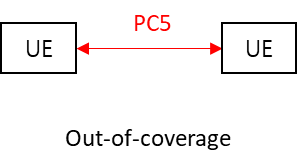

Technical Specification Group Radio Access Network;
Study on scenarios and requirements of in-coverage, partial coverage,
and out-of-coverage NR positioning use cases
(Release 17)
The present document has been developed within the 3rd
Generation Partnership Project (3GPP TM) and may be further
elaborated for the purposes of 3GPP.
The present document has not been subject to any approval process by the
3GPP Organizational Partners and shall not be implemented.
This Specification is provided for future development work within 3GPP
only. The Organizational Partners accept no liability for any use of
this Specification.
Specifications and Reports for implementation of the 3GPP TM
system should be obtained via the 3GPP Organizational Partners'
Publications Offices.
3GPP
Postal address
3GPP support office address
650 Route des Lucioles - Sophia Antipolis
Valbonne - FRANCE
Tel.: +33 4 92 94 42 00 Fax: +33 4 93 65 47 16
Internet
http://www.3gpp.org
Copyright
Notification
No part may be reproduced except as authorized by written
permission.
The copyright and the foregoing restriction extend to reproduction in
all media.
UMTS™ is a Trade Mark of ETSI registered for the benefit of its
members
3GPP™ is a Trade Mark of ETSI registered for the benefit of its
Members and of the 3GPP Organizational Partners
LTE™ is a Trade Mark of ETSI registered for the benefit of its Members
and of the 3GPP Organizational Partners
GSM® and the GSM logo are registered and owned by the GSM
Association
This Technical Report has been produced by the 3rd Generation
Partnership Project (3GPP).
The contents of the present document are subject to continuing work
within the TSG and may change following formal TSG approval. Should the
TSG modify the contents of the present document, it will be re-released
by the TSG with an identifying change of release date and an increase in
version number as follows:
Version x.y.z
where:
x the first digit:
1 presented to TSG for information;
2 presented to TSG for approval;
3 or greater indicates TSG approved document under change
control.
y the second digit is incremented for all changes of substance, i.e.
technical enhancements, corrections, updates, etc.
z the third digit is incremented when editorial only changes have
been incorporated in the document.
In the present document, certain modal verbs have the following
meanings:
shall indicates a mandatory requirement to do
something
shall not indicates an interdiction (prohibition) to
do something
NOTE 1: The constructions "shall" and "shall not" are confined to the
context of normative provisions, and do not appear in Technical
Reports.
NOTE 2: The constructions "must" and "must not" are not used as
substitutes for "shall" and "shall not". Their use is avoided insofar as
possible, and they are not used in a normative context except in a
direct citation from an external, referenced, non-3GPP document, or so
as to maintain continuity of style when extending or modifying the
provisions of such a referenced document.
should indicates a recommendation to do
something
should not indicates a recommendation not to do
something
may indicates permission to do something
need not indicates permission not to do
something
NOTE 3: The construction "may not" is ambiguous and is not used in
normative elements. The unambiguous constructions "might not" or "shall
not" are used instead, depending upon the meaning intended.
can indicates that something is possible
cannot indicates that something is impossible
NOTE 4: The constructions "can" and "cannot" shall not to be used as
substitutes for "may" and "need not".
will indicates that something is certain or expected
to happen as a result of action taken by an agency the behaviour of
which is outside the scope of the present document
will not indicates that something is certain or
expected not to happen as a result of action taken by an agency the
behaviour of which is outside the scope of the present document
might indicates a likelihood that something will
happen as a result of action taken by some agency the behaviour of which
is outside the scope of the present document
might not indicates a likelihood that something will
not happen as a result of action taken by some agency the behaviour of
which is outside the scope of the present document
In addition:
is (or any other verb in the indicative mood)
indicates a statement of fact
is not (or any other negative verb in the indicative
mood) indicates a statement of fact
NOTE 5: The constructions "is" and "is not" do not indicate
requirements.
1 Scope
The present document captures the findings of the study item, "Study
on scenarios and requirements of in-coverage, partial coverage, and
out-of-coverage positioning use cases" [2]. The purpose of this TR is to
facilitate future 3GPP work by identifying the requirements and
deployment/operation scenarios for V2X and public safety use cases. In
particular, this study considers positioning for the UEs in in-coverage,
partial coverage, and out-of-coverage as per the network coverage
definition in the current specifications.
This document is a 'living' document, i.e. it is permanently updated
and presented to TSG-RAN meetings until it is approved.
2 References
The following documents contain provisions which, through reference
in this text, constitute provisions of the present document.
- References are either specific (identified by date of publication,
edition number, version number, etc.) or non‑specific.
- For a specific reference, subsequent revisions do not apply.
- For a non-specific reference, the latest version applies. In the
case of a reference to a 3GPP document (including a GSM document), a
non-specific reference implicitly refers to the latest version of that
document in the same Release as the present document.
[1] 3GPP TR 21.905: "Vocabulary for 3GPP Specifications".
[2] 3GPP RP-201518: "Revised SID on Study on scenarios and
requirements of in-coverage, partial coverage, and out-of-coverage
positioning use cases".
[3] 3GPP TS 22.261: "Service requirements for the 5G system".
[4] 3GPP TS 22.186 v16.2.0: "Enhancement of 3GPP support for V2X
scenarios".
[5] 3GPP RP-210040: "Reply LS to RP-201390 on requirements of
in-coverage, partial coverage, and out-of-coverage positioning use
cases," (source: 5GAA).
[6] 3GPP RP-210036: "Reply LS to 3GPP TSG RAN on requirements of
in-coverage, partial coverage and out-of-coverage positioning use
cases," (source: SAE Advanced Applications Technical Committee).
[7] 3GPP TS 22.280: "Mission Critical Services Common Requirements
(MCCoRe)".
[8] 3GPP TR 22.872: "Study on positioning use case".
[9] 3GPP TR 37.885: "Study on evaluation methodology of new
Vehicle-to-Everything (V2X) use cases for LTE and NR".
[10] 3GPP TR 38.802: "Study on new radio access technology Physical
layer aspects".
3 Definitions of
terms, symbols and abbreviations
3.1 Terms
For the purposes of the present document, the terms given in 3GPP
TR 21.905 [1] and the following apply. A term defined in the present
document takes precedence over the definition of the same term, if any,
in 3GPP TR 21.905 [1].
absolute position: absolute position is an estimate
of the UE position in 2D/3D geographic coordinates (e.g., latitude,
longitude, elevation) within a coordinate system
relative position: relative position is an estimate
of the UE position relative to other network elements or relative to
other UEs
positioning service availability: percentage value
of the amount of time the positioning service is delivering the required
position-related data within the performance requirements, divided by
the amount of time the system is expected to deliver the positioning
service according to the specification in the targeted service area.
positioning service latency: time elapsed between
the event that triggers the determination of the position-related data
and the availability of the position-related data at the system
interface.
3.2 Symbols
For the purposes of the present document, the following symbols
apply:
<symbol> <Explanation>
3.3 Abbreviations
For the purposes of the present document, the abbreviations given in
3GPP TR 21.905 [1] and the following apply. An abbreviation defined in
the present document takes precedence over the definition of the same
abbreviation, if any, in 3GPP TR 21.905 [1].
5GAA 5G Automotive Association
SAE AA TC SAE Advanced Applications Technical Committee
TTFF Time To First Fix
HD High Definition
RV Remote vehicle
TOD Tele-Operated Driving
MCX Mission Critical X, with X = PTT or X= Video or X= Data
4 Positioning use cases
and requirements
4.1 Introduction
This clause summarizes the positioning use cases and requirements
defined for V2X and public safety in 3GPP specifications and input from
other organizations. Sources used in this summary are provided in Annex
A for information.
4.2 V2X
In 3GPP specifications, V2X positioning requirements can be found in
TS 22.261 [3] and TS 22.186 [4]. TS 22.261 [3] specifies the high
accuracy positioning requirements for the 5G system and these
requirements are summarized in its Clause 7.3.2.2 with a note that these
requirements include V2X. Seven different positioning service levels are
defined in Table 7.3.2.2-1 [3] in terms of the horizontal and vertical
accuracy, positioning service availability, and positioning service
latency. TS 22.186 [4] specifies the relative lateral positioning
requirement for general V2X use cases and the relative longitudinal
positioning requirement for the platooning use case in its Clause 5.1
and 5.2.
5GAA provides positioning requirements for 58 V2X services that were
summarized into three groups [5]; the first group with tens of meters
accuracy, the second with lane level accuracy, and the third with
sub-meter level accuracy. The positioning requirements can be on the
3D/2D coordinates (absolute position) or on the distance and/or angle
(relative position) to a reference point, e.g. another UE.
SAE AA TC informs that it is necessary to have a 3GPP positioning
technology which supports advanced V2X applications working even in
various out-of-coverage scenarios [6].
It is observed that the positioning requirements in V2X depend on the
service the UE operates. Also, the requirements are applicable to
relative and absolute positioning depending on the use case or the
positioning service level. In terms of the horizontal or
lateral/longitudinal accuracy, the requirements for the absolute
position or relative position can be categorised into three sets as
follows by incorporating the requirements from the sources mentioned
above:
- Set 1: 10 – 50 m with 68 – 95 % confidence level. This includes
Group 1 in [5] and Service level 1 in [3].
- Set 2: 1 – 3 m with 95 – 99 % confidence level. This includes Group
2 in [5], Service level 2, 3, 4 in [3].
- Set 3: 0.1 – 0.5 m with 95 – 99 % confidence level. This includes
Group 3 in [5], Service level 5, 6, 7 in [3], the requirements in
[4].
It is noted that all the three sets are applicable for absolute
positioning and relative positioning.
Requirements for other performance metrics are also defined in a
range depending on the positioning service level in TS 22.261 [3]; 2 – 3
m (absolute) or 0.2 m (relative) vertical accuracy, 95 – 99.9%
positioning service availability, 10 ms – 1 s positioning service
latency.
Positioning service should be provided in indoor, outdoor, tunnel
areas. The UE velocity up to 250 km/h needs to be supported for outdoor
and tunnel areas. As long as the UE operates a V2X use case having the
corresponding positioning requirements, the requirements should be
fulfilled when the UE is inside the network coverage as well as when it
is outside the network coverage. The requirements should be also
fulfilled when the GNSS-based positioning is not available or not
accurate enough.
4.3 Public safety
Public safety positioning requirements are defined in TS 22.261 [3]
and TS 22.280 [7]. TS 22.261 [3] provides numerical positioning
requirements for the "1st responders" use case in Table B.1-1 in TS
22.261 [3]; 1 m horizontal accuracy, 2 m (absolute) or 0.3 m (relative)
vertical accuracy, 95 – 98 % positioning service availability. TS 22.280
[7] specifies some qualitative positioning requirements in its Clause
5.11, 6.12, and 7.8. These requirements are applicable to both relative
and absolute positioning.
Positioning service should be provided both in indoor and outdoor
areas. As long as the UE operates a public safety use case having the
corresponding positioning requirements, the requirements should be
fulfilled when the UE is inside the network coverage as well as when it
is outside the network coverage. The requirements should be also
fulfilled when the GNSS-based positioning is not available or not
accurate enough.
5 Potential
deployment and operation scenarios
5.1 Network coverage
Three network coverage scenarios can be considered when at least two
UEs are involved in positioning for V2X and public safety use cases.
Taking the case of two UEs as an example, in-coverage scenario refers to
the case where both UEs are inside the network. Partial coverage means
that one UE remains inside the network coverage but the other UE is
outside the network coverage. Out-of-coverage scenario refers to the
case where both UEs are outside the network coverage. A UE may transit
between in-coverage, partial coverage and out-of-coverage scenarios.
There are V2X and public safety use cases that require positioning
when there is no network and no GNSS coverage.
Figures 5.1-1, 5.1-2, and 5.1-3 illustrate the in-coverage, partial
coverage and out-of-coverage scenarios, respectively.
Figure 5.1-1: In-coverage scenario
Figure 5.1-2: Partial coverage scenario

Figure 5.1-3: Out-of-coverage scenario
5.2 Radio link
Uu interface (uplink and downlink), PC5 interface (sidelink), and
their combinations can be considered as the radio link for
positioning.
Uu interface is available for UEs under in-coverage scenario, and
also for UEs under network coverage in partial coverage scenario, while
PC5 interface is available for UEs under in-coverage, partial coverage,
out-of-coverage scenarios.
A positioning operation can be called a Uu-based solution if it uses
only measurements on Uu interface (i.e., measurements on uplink and/or
downlink). An operation can be called a PC5-based solution if it uses
only measurements on PC5 interface (i.e., measurements on sidelink). An
operation can be called a hybrid solution if it uses measurements on
both Uu and PC5 interfaces. In addition to these RAT-dependent
solutions, RAT-independent solutions (e.g., GNSS, sensors, etc.) can be
used, where various technologies can complement each other, where it is
available and applicable.
The necessary information for positioning and the measurements for
positioning can be sent via Uu and/or PC5 interface.
5.3 Position calculation
entity
Positioning solutions can be categorized by the entity performing the
positioning estimation. Network-based positioning refers to the
solutions where UE position is calculated by a network node. For this
network-based positioning, the UE may report necessary information to
the network for the calculation. UE-based positioning refers to the
solution where UE position is calculated by a UE.
The type of the position calculation entity does not limit which
interface(s) can be used for the radio link(s) in clause 5.2.
5.4 UE types
For V2X use cases, a UE involved in positioning can be installed in a
vehicle, a road side unit, or a device of a vulnerable road user.
A UE in a vehicle or a road side unit can be equipped with a
distributed antenna system where multiple antenna panels of a UE are
installed in different locations. A relevant antenna model for
evaluation can be found in [9].
For public safety use cases, a relevant antenna model for evaluation
can be found in [10].
Different UE types may have different power supply limitations, for
example, a UE used by a vulnerable road user may have limited battery
capacity compared to other types of UE, e.g., a UE installed in a
vehicle or a road side unit.
5.5 Spectrum
For V2X use case, the ITS-dedicated spectrum can be considered for
PC5 interface, and the spectrum licensed to mobile network operators
(including FR2) and the unlicensed spectrum can be considered for both
Uu and PC5 interfaces. Note that there is no mechanism corresponding to
regulatory requirements to use unlicensed spectrum in Rel-17 NR
sidelink.
For public safety use case, the spectrum licensed to mobile network
operators (including FR2) can be considered for both Uu and PC5
interfaces.
6 Conclusions
This technical report summarizes the positioning use cases and
requirements for V2X and public safety use cases. The V2X and PS
requirements in this TR are applicable to absolute and relative
positioning. The positioning requirements in V2X depend on the service
the UE operates, and this TR categorized the requirements into three
sets as summarized in Clause 4.
The main aspects of potential deployment and operation scenarios are
provided in Clause 5 including:
- Network coverage:
- In-coverage, partial coverage, out of network coverage
scenarios
- When the UE operates a use case having the corresponding
positioning requirements, the requirements should be fulfilled when the
UE is inside the network coverage as well as when it is outside the
network coverage.
- Radio link:
- Measurements on Uu interface (downlink/uplink), PC5 interface
(sidelink) and their combinations for UE positioning
- Use of RAT-dependent and RAT-independent solutions
- Position calculation entity:
- Network-based and UE-based positioning solutions
- UE types:
- V2X: installed in a vehicle, a road-side unit or a device used by a
vulnerable road user, where different UE types may have different UE
antenna configurations and power supply limitations
- Spectrum:
- V2X: licensed, unlicensed spectrum for both Uu and PC5
air-interfaces and ITS for PC5 air-interface. NOTE: There is no
mechanism corresponding to regulatory requirements to use unlicensed
spectrum in Rel-17 NR sidelink.
- Public safety: licensed spectrum for both Uu and PC5
air-interfaces.
Annex
A:
Sources of positioning requirements for V2X and public safety
Sources in TS 22.261 [3]
copied from TS 22.261 [3] Clause 7.3.2.2:
The 5G system shall be able to provide positioning services with
the performance requirements reported in Table 7.3.2.2-1.
NOTE: The requirements do not preclude any type of UE, including
specific UE such as for example V2X, MTC.
Table 7.3.2.2-1 Performance requirements for Horizontal and
Vertical positioning service levels
Positioning
service level
Absolute(A) or
Relative(R) positioning
Accuracy
(95 % confidence level)
Positioning
service availability
Positioning
service latency
Coverage,
environment of use and UE velocity
Horizontal
Accuracy
Vertical
Accuracy
(note 1)
5G positioning
service area
5G enhanced
positioning service area
(note 2)
Outdoor and
tunnels
Indoor
1
A
10 m
3 m
95 %
1 s
Indoor - up to 30 km/h
Outdoor
(rural and urban) up to 250 km/h
NA
Indoor - up to 30 km/h
2
A
3 m
3 m
99 %
1 s
Outdoor
(rural and urban) up to 500 km/h for trains and up to 250 km/h
for other vehicles
Outdoor
(dense urban) up to 60 km/h
Along roads up to 250 km/h and along railways up to 500
km/h
Indoor - up to 30 km/h
3
A
1 m
2 m
99 %
1 s
Outdoor
(rural and urban) up to 500 km/h for trains and up to 250 km/h
for other vehicles
Outdoor
(dense urban) up to 60 km/h
Along roads up to 250 km/h and along railways up to 500
km/h
Indoor - up to 30 km/h
4
A
1 m
2 m
99,9 %
15 ms
NA
NA
Indoor - up to 30 km/h
5
A
0,3 m
2 m
99 %
1 s
Outdoor
(rural) up to 250 km/h
Outdoor
(dense urban) up to 60 km/h
Along roads and along railways up to 250 km/h
Indoor - up to 30 km/h
6
A
0,3 m
2 m
99,9 %
10 ms
NA
Outdoor
(dense urban) up to 60 km/h
Indoor - up to 30 km/h
7
R
0,2 m
0,2 m
99 %
1 s
Indoor and outdoor (rural, urban, dense urban) up
to 30 km/h
Relative positioning is between two UEs within 10 m of each other
or between one UE and 5G positioning nodes within 10 m of each other
(note 3)
NOTE 1: The objective for the vertical
positioning requirement is to determine the floor for indoor use cases
and to distinguish between superposed tracks for road and rail use cases
(e.g. bridges).
NOTE 2: Indoor includes location inside buildings such as
offices, hospital, industrial buildings.
NOTE 3: 5G positioning nodes are infrastructure equipment
deployed in the service area to enhance positioning capabilities (e.g.
beacons deployed on the perimeter of a rendezvous area or on the side of
a warehouse).
The 5G system shall be able to provide the 5G positioning
services with a TTFF less than 30 s and, for some 5G positioning
services, shall support mechanisms to provide a TTFF less than 10 s.NOTE
1: In some services, a TTFF of less than 10s may only be achievable at
the expense of a relaxation of some other performances (e.g. horizontal
accuracy may be 1 m or 3 m after 10 s TTFF, and reach a steady state
accuracy of 0,3 m after 30 s).
The 5G system shall support a mechanism to determine the UE's
velocity with a positioning service availability of 99%, an accuracy
better than 0,5 m/s for the speed and an accuracy better than 5 degree
for the 3-Dimension direction of travel.
The 5G system shall support a mechanism to determine the UE's
heading with an accuracy better than 30 degrees (0,54 rad) and a
positioning service availability of 99,9 % for static users and with an
accuracy better than 10 degrees (0,17 rad) and a positioning service
availability of 99 % for users up to 10 km/h.
The 5G system shall support positioning technologies that allow
the UE to operate at Service Level 1 for at least 12 years using less
than 1800 mWh of battery capacity, assuming multiple position updates
per hour.
NOTE 2: This requirement aims energy-efficient positioning
technologies draining a minimal energy on the UE battery. It derives
from use cases, such as asset tracking, with a small form-factor battery
representative of an IoT device. This requirement may translate into an
energy consumption for the UE's positioning functions in the order of 20
mJ per fix.
NOTE 3: This requirement does not preclude the use of higher
energy consumption to fulfil higher position update rates than the one
above, or other KPIs than those of Service Level 1 (e.g. more accurate
service levels).
copied from TS 22.261 [3] Annex B (only a part of the table is
copied):
Table B.1-1 Typical needs to support example use cases from
vertical industries.
Use cases
Description
Main KPIs range and
drivers
1st responders
Tracking and guidance of 1st
responders, with requirements for high-accuracy in the horizontal domain
and vertical domain, as well as accurate awareness of height variation
to detect falls, combined to a high level of availability and
reliability
Service area is both indoor and
outdoor
Accuracy: < 1m horizontal, < 2m vertical (indoor for floor
detection) and < 0,3 m vertical (relative) to detect changes in
height of the UE holder.
Availability > 95 % (98% outdoor)
Other KPI drivers include: MCX, confidence, event-triggered
report
Road
Use cases involving road vehicles
such as traffic monitoring, road-user charging (e.g. Road-Tolling,
insurance mechanisms, etc.) which require positioning or tracking of
vehicles at lane level, but also some awareness of position in the
vertical domain (e.g. bridges) Service area is outdoor, but may include
tunnels.
Accuracy: 1-3m horizontal (with
<1m across-track for lane detection), <2,5 m vertical,
Velocity < 2m/s, Availability: 95-99%
Other KPI drivers include: tampering detection and prevention
(typically for Road User Charging)
Sources in TS 22.186 [4]
copied from TS 22.186 [4] Clause 5.1:
[R.5.1-007] The 3GPP system shall support relative lateral
position accuracy of 0.1 m between UEs supporting V2X
application.
copied from TS 22.186 [4] Clause 5.2:
[R.5.2-003] The 3GPP system shall support relative longitudinal
position accuracy of less than 0.5 m for UEs supporting V2X application
for platooning in proximity.
Sources in the input from 5GAA [5]
The positioning requirements according to the 5GAA TRs on Use Cases
Vol. I and II can be summarized into three main groups, all at the
highest speed a participating vehicle might be driving at, depending on
the type of road environment and/or safety rules (e.g. 250km/h on German
Autobahn):
1) Relatively lax, 10s of meters with 1 sigma (information
provisioning)
- Traffic Jam Warning - Urban Scenario on Road Warning
- Traffic Jam Warning - Rural Scenario on Road Warning
- Traffic Jam Warning - Highway Scenario on Road Warning
[R-5.11-001] The MCX Service shall support obtaining and
conveying Location information describing the position of the MCX
UE.
[R-5.11-002] The MCX Service should support obtaining and
conveying high accuracy Location information describing the position of
the MCX UE.
[R-5.11-002a] The MCX Service shall be able to provide a
mechanism for obtaining high accuracy Location information by
integrating position information from multiple external sources (e.g.
magnetometers, orientation sensors, GNSS)
[R-5.11-003] The MCX Service shall provide for the flexibility to
convey future formats of Location information.
[R-5.11-004] The MCX Service shall provide a means for MCX
Service Administrators to manage the privacy of Location information for
MCX Users within their authority.
[R-5.11-005] An authorized MCX User shall be able to control the
supplying of Location information by the MCX UE for MCX Service
communications.
[R-5.11-006] The conveyed Location information shall be the most
recently obtained information about the position of the MCX UE at the
time of the Location information conveyance.
[R-5.11-007] The MCX Service shall be capable of configuring and
re-configuring one or more Location information update triggers (i.e.,
identified conditions that, when satisfied, cause the MCX UE to report
its current Location information).
[R-5.11-008] The MCX Service shall be able to modify Location
information update triggers of an MCX User while the MCX User is on the
network.
[R-5.11-009] The MCX Service shall provide a means for an MCX UE
to send a Location information update whenever a trigger condition is
satisfied (e.g., initial registration, distance travelled, elapsed time,
cell change, tracking area change, PLMN change, MCX Service
communication initiation).
[R-5.11-010] The MCX Service shall provide a means for an MCX UE
to send a Location information update whenever the MCX User initiates an
MCX Service Emergency Alert.
[R-5.11-011] The MCX Service shall provide a means for an MCX UE
to send a Location information update whenever the MCX User initiates an
MCX Service Emergency Group Communication.
[R-5.11-012] The MCX Service shall provide a means for an MCX UE
to send a Location information update if the MCX User is in an MCX
Service Emergency State and a configured amount of time has passed since
the previous location information update.
[R-5.11-013] The MCX Service shall provide a means for an MCX UE
to send a Location information update whenever a trigger condition is
satisfied while the MCX User is in MCX Service Emergency State (e.g.,
initial registration, distance travelled, elapsed time, cell change,
tracking area change, PLMN change, MCX Service communication
initiation).
NOTE 1: The Location information update triggers for an MCX User
in an MCX Service Emergency State might be different than the Location
information update triggers used when the MCX User is not in an MCX
Service Emergency State.
[R-5.11-014] The MCX Service shall provide a means for an MCX
Service Administrator to define geographical areas to be used for
Location information update triggers for MCX Users within their
authority.
[R-5.11-015] The MCX Service shall provide a means for an MCX UE
in a predefined area to send a Location information update whenever a
trigger condition configured in an MCX User's active MCX Service User
Profile is satisfied (e.g., initial registration, distance travelled,
elapsed time, cell change, tracking area change, PLMN change, MCX
Service communication initiation).
NOTE 2: The Location information update triggers for an MCX User
in a predefined area might be different than the Location information
update triggers used when the MCX User is not in a predefined
area.
copied from TS 22.280 [7] Clause 6.12:
[R-6.12-001] The MCX Service shall provide Location information
of the transmitting MCX UE to receiving MCX UEs subject to privacy
restrictions.
[R-6.12-002] The MCX Service shall support conveyance of Location
information provided by 3GPP location services.
[R-6.12-003] The MCX Service shall provide a means for an
authorized MCX User to restrict the dissemination of his Location
information.
[R-6.12-004] The MCX Service shall provide end-to-end
confidentiality of Location information.
[R-6.12-005] The MCX Service shall provide authentication of
messages carrying Location information.
[R-6.12-006] The MCX Service shall provide a means for an
authorized MCX User to activate a one-time Location information report
of an MCX User and periodic Location information update reports of an
MCX User or a specific Functional Alias.
[R-6.12-007] The MCX Service shall provide a means for an
authorized MCX User to deactivate periodic Location information update
report of an MCX User.
copied from TS 22.280 [7] Clause 7.8:
[R-7.8-001] An MCX UE shall be capable of transmitting its
Location, if known, to other MCX UEs when operating off the network,
subject to privacy restrictions.
[R-7.8-002] An MCX UE shall be capable of providing a mechanism
for obtaining the distance between the MCX UE and other MCX UEs within
communication range.
[R-7.8-003] The Off-Network MCX Service shall provide a means for
an authorized MCX User to activate a one-time Location information
report of a particular target MCX User within communication
range.
Sources in 3GPP TR 22.872 [8]
summarized requirements from TR 22.872 [8]:
Table A.1 Summary of positioninig requirements related to public
safety in [8]
Use case set
Absolute
Positioning
Accuracy
Relative
accuracy
Availability
Heading
Latency for position estimation
of UE
UE speed
accuracy
Set1
(Accurate Positioning for 1st responder)
Outdoor
H:[1]m
V:[0.3]m
Outdoor
H:[1]m
V:[0.3]m
Outdoor
[98%]
/
Outdoor
[5]s
TTFF
[10]s
/
Indoor
H:[1]m
V:[2]m
Indoor
H:[1]m
V:[2]m
Indoor
[95%]
/
Indoor
[1]s
TTFF
[10]s
/
Set2
(Alerting nearby emergency responder)
H:[50]m
V:[3]m
H:[50]m
V:[3]m
/
/
/
/
Annex B:
Change history
Change
history
Date
Meeting
TDoc
CR
Rev
Cat
Subject/Comment
New version
2021-03
RP-91e
RP-210282
TR skeleton
0.0.0
2021-03
RP-91e
RP-210285
Positioning requirements for V2X and
public safety acc. to pCR RP-210839
0.1.0
2021-06
RP-92e
RP-210981
Editorial cleanup to align TR with the
drafting rules
0.1.1
2021-06
RP-92e
RP-211276
Updated positioning requirements and
addition of potential deployment and operation scenarios acc. To pCR
RP-211275
1.0.0
2021-06
RP-92e
RP-211575
Clean version with typo fixed in 5.1 and
Annex A
1.0.1
2021-09
RP-93e
RP-212038
Updated potential deployment and
operation scenarios and addition of conclusions acc. to pCR
RP-212037